GENIE MATE
GenieMates is an app designed to connect motivated freelancers who are eager to collaboratively learn and develop new professional skills through small, interactive group sessions.
Challenge
Develop a digital solution that supports impact-driven professionals in acquiring the skills they need to build and sustain a solo business
Class
Designing digital experience - master of interaction design SUPSI
Modality
1 month - team of 4
Roles
UX research, Concept development, User flow, Wireframe, UI prototyping
Tools
Figma
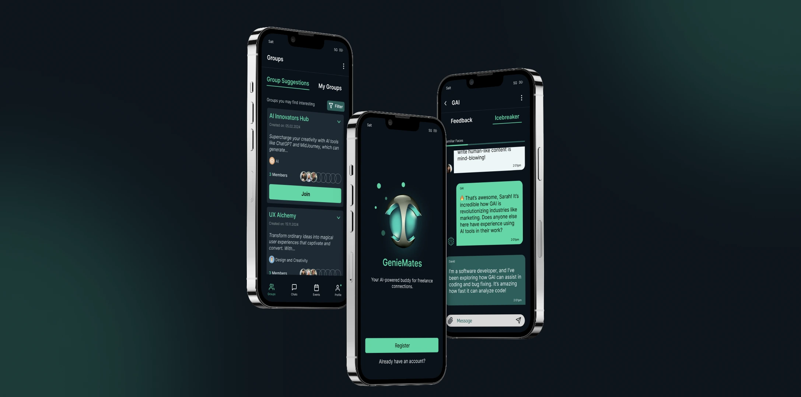
OUTCOME
The application integrates advanced Generative AI capabilities to enhance the learning experience. When participants encounter conversational challenges or feel momentum stalling, the embedded Generative AI intervenes as a real group member by providing constructive suggestions, feedbacks, discussion prompts to reignite dialogue and learning engagement.
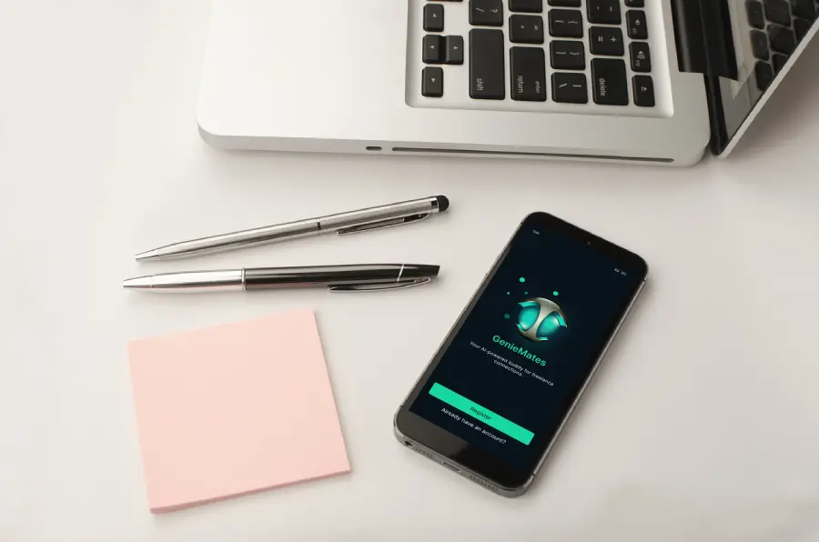
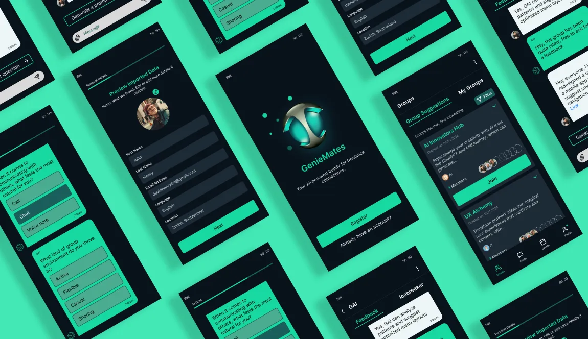
App
The App is here is to simply freelancer connection with each other according to common learning goals and get peer-support during their learning process.
Registration
Quick and comprehensive profile building for better match
- Seamless Auto Profile
- LinkedIn Integration
- Effortless Setup
- AI conversation for better targeting
Group and feedback
Peer-learning group that allow to share struggle in a judgement free space
- Personalized Suggestions:
- Filtering Options
- Small, Intimate Groups
- Engagement Reminders
- AI Feedback Support
Icebreaker chat
Conversation icebreaker to help build better group dynamic for empathy, consistency and honest feedback
- Warm Chat Initiation
- Fun polls and engaging questions
- New Member Welcome
Problem definition
Many freelancers and solopreneurs encounter significant challenges
when it comes to locating peer groups that can facilitate their
learning and skill development. The nature of freelance work often
leads to isolation, making it difficult to connect with others who
share similar professional interests and aspirations. Traditional
learning methods often lack flexibility and can involve lengthy,
intense schedules. In contrast, peer learning significantly helps in
achieving this learning objectives.
So we ask ourself :
How might we leverage the use of GAI in order to cultivate and
enhance meaningful human relationships for better peer-learning.
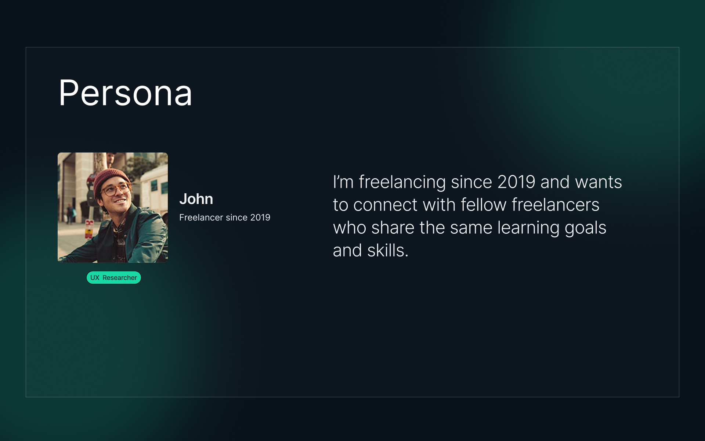
Research insight
Learning is essential for evolving in a freelancing career.
Small communities help share struggles and avoid isolation.
Generative AI supports but won't replace human connection.
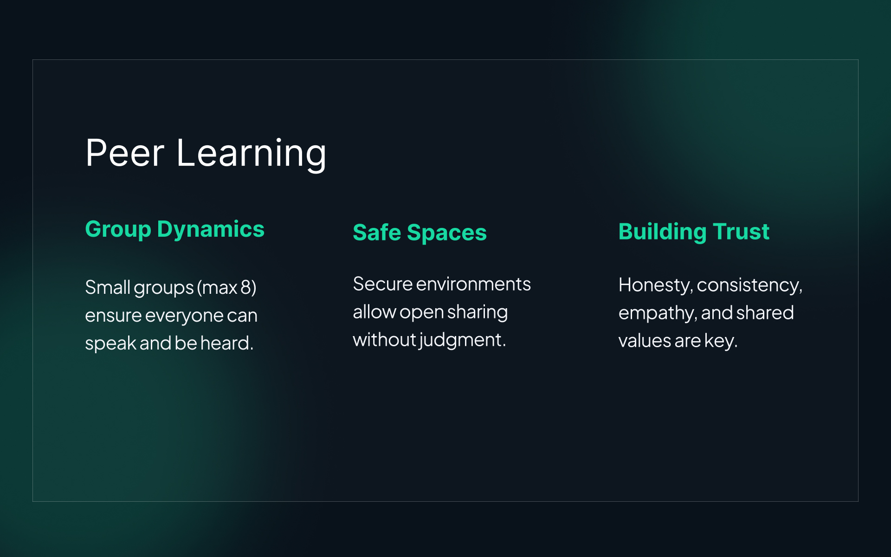
Solution
We aim to develop an app or digital platform that is only as valuable as the human relationships and connections it can inspire, nurture, support, and encourage. The solution should be light and supportive of interpersonal relationships, utilizing Generative AI to enhance and facilitate feedback and responses. We think we make a mistake thinking that a technology-only solution is the answer. It's all about other person to person relationships.
User flow
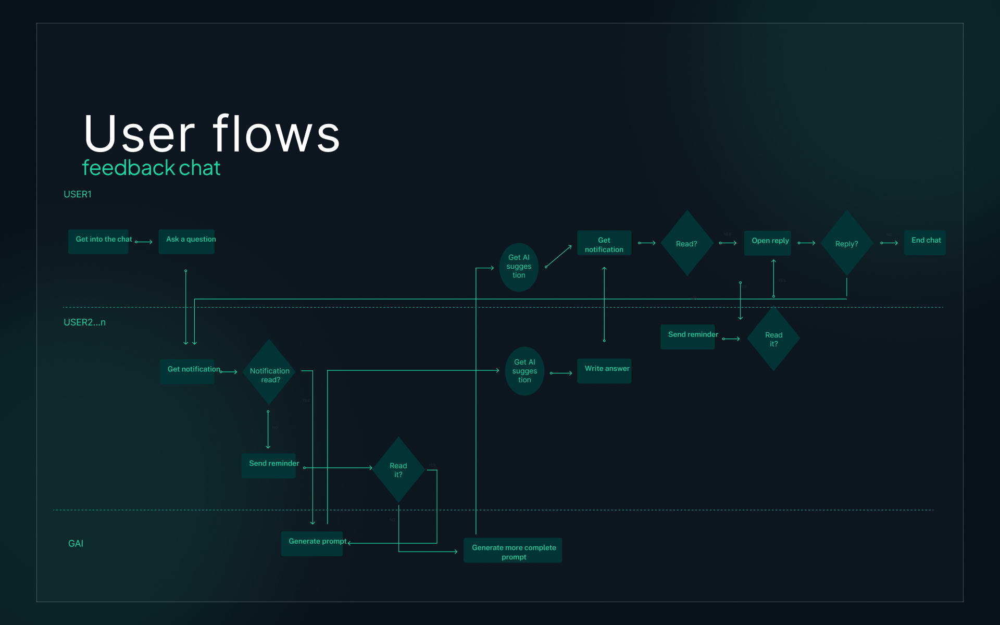
Style guide
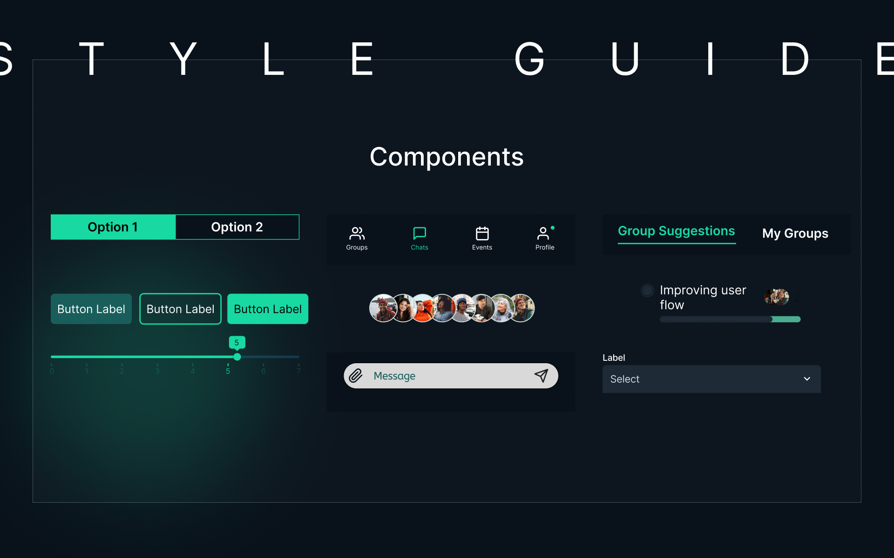
User testing
We tested the profile building feature and the group search and joining function, the chat and icebreaker activities were done with premade simulate chat and would need more advance prototype for AI-integration. We receive encouraging feedback as the app is filling a real need in the freelancing community as well as constructing criticism to improve our design.
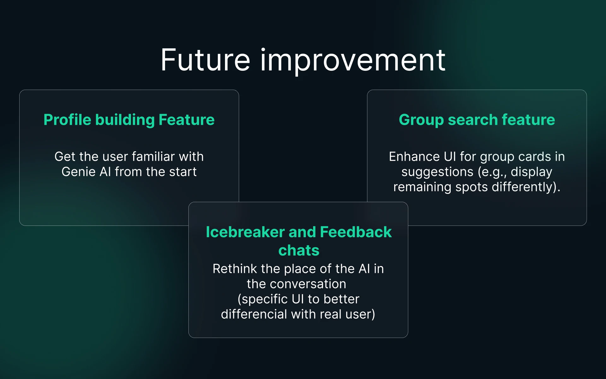
Learning
From user research to finish product
Turn user research insights into flows and finally a working mobile prototype.
Navigating the design process
Gain experience in ideation and concept development in order to create impactful design
Collaboration with potential user
Integration of user in the design process from UX research interview to final prototyp feedback review session.
PROCESS
We started our process with the research, did benchmark and conducted interviews with freelancers. Based on that we define the problem and opportunity. We ideate using different design framework like the round robin and solution card to finally go into the design and UI development, first we did wireframe and then more refine figma prototype and finish with user testing.
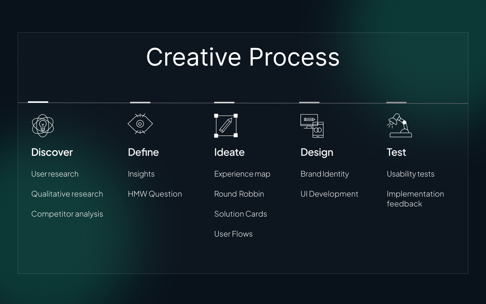
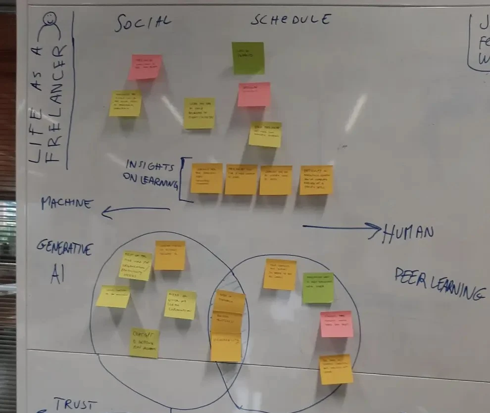
ideation process
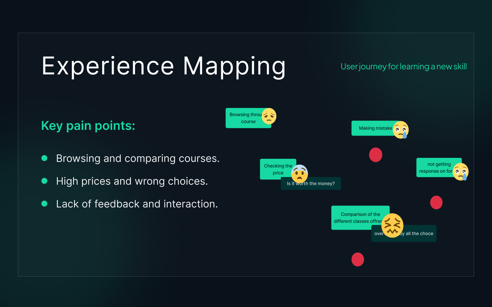
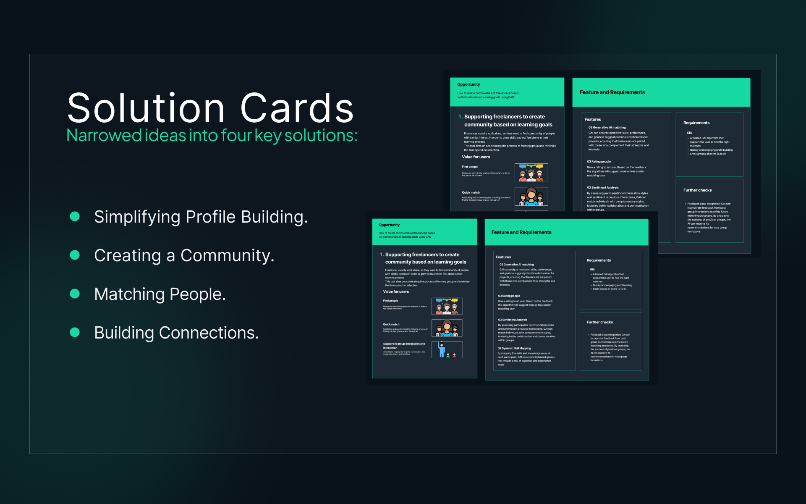
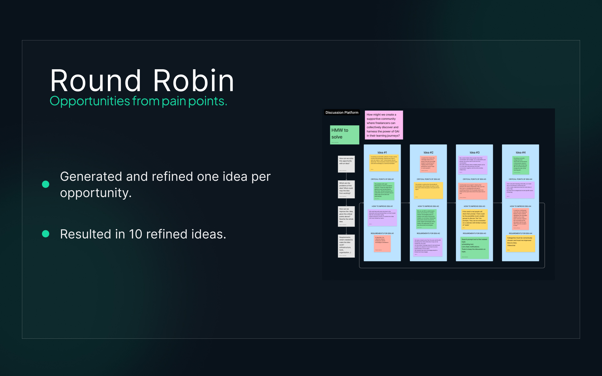